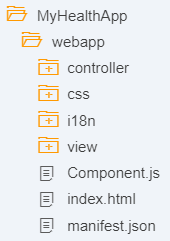

This tutorial provides a step-by-step guide on how to include the OpenUI5-FHIR project in an UI5 application and shows some best practices. The following sections describe in detail what you need to do to code state-of-the-art UI5 applications based on a FHIR® server. The sample app containing the resources of this tutorial can be accessed on this repository.
Table of Contents
1.1 Creating a UI5 Application
First of all, create a UI5 application based on the following folder structure:
|  |
|
{
"_version": "1.7.0",
"sap.app": {
"id": "myhealthapp",
"type": "application",
"i18n": "i18n/i18n.properties",
"applicationVersion": {
"version": "1.0.0"
},
"title": "MyHealthApp",
"description": "This app provides an overview of how to work with the *UI5 FHIR Model*"
},
"sap.ui": {
"supportedThemes": [
"sap_hcb",
"sap_belize"
]
},
"sap.ui5": {
"rootView": {
"viewName": "myhealthapp.view.App",
"type": "XML",
"id": "appView"
},
"dependencies": {
"minUI5Version": "1.54.0",
"libs": {
"sap.ui.core": {},
"sap.m": {}
}
},
"contentDensities": {
"compact": true,
"cozy": true
},
"models": {
"i18n": {
"type": "sap.ui.model.resource.ResourceModel",
"settings": {
"bundleName": "myhealthapp.i18n.i18n"
}
}
},
"resources": {
"css": [{
"uri": "css/style.css"
}]
},
"routing": {
"config": {
"routerClass": "sap.m.routing.Router",
"viewType": "XML",
"viewPath": "myhealthapp.view",
"controlId": "app",
"controlAggregation": "pages",
"transition": "slide"
},
"routes": [
{
"pattern": "",
"name": "home",
"target": "home"
}
],
"targets": {
"home": {
"viewName": "Home",
"viewId": "home",
"viewLevel": 1
}
}
}
}
}
webapp / manifest.json
Create a new file called index.html, place it in the webapp folder, and add the following content:
<!DOCTYPE HTML>
<html>
<head>
<meta http-equiv="X-UA-Compatible" content="IE=edge" />
<meta charset="UTF-8">
<title>MyHealthApp</title>
<script id="sap-ui-bootstrap" src="resources/sap-ui-core.js"
data-sap-ui-libs="sap.m"
data-sap-ui-theme="sap_belize"
data-sap-ui-compatVersion="edge" data-sap-ui-preload="async"
data-sap-ui-resourceroots='{"myhealthapp": ""}'>
</script>
<link rel="stylesheet" type="text/css" href="css/style.css">
<script>
sap.ui.getCore().attachInit(function() {
new sap.m.Shell({
app: new sap.ui.core.ComponentContainer("healthComponentContainer",{
height : "100%",
name : "myhealthapp",
settings : {
id : "healthComponent"
}
})
}).placeAt("content");
});
</script>
</head>
<body class="sapUiBody" id="content">
</body>
</html>
webapp / index.html
Create a new file called Component.js, place it in the webapp folder, and add the following content:
sap.ui.define(["sap/ui/core/UIComponent"], function(UIComponent) {
"use strict";
return UIComponent.extend("myhealthapp.Component", {
metadata: {
manifest: "json"
},
init: function() {
UIComponent.prototype.init.apply(this, arguments);
this.getRouter().initialize();
}
});
});
webapp / Component.js
Create a new file called i18n.properties, place it in the webapp/i18n folder, and add the following content:
title=My Health App
patientsTileInfo=We have {0} patients
organzationsTileInfo=We have {0} organizations
webapp / i18n / i18n.properties
It's time to create the root UI5 view containing your UI5 application. Therefore, create a new file called App.view.xml, place it in the webapp/view folder, and add the following content:
<core:View displayBlock="true" xmlns:core="sap.ui.core" xmlns:mvc="sap.ui.core.mvc" xmlns="sap.m" controllerName="myhealthapp.controller.App" xmlns:html="http://www.w3.org/1999/xhtml">
<App id="app" />
</core:View>
webapp / view / App.view.xml
To add some actions to the view later, you need to create a controller. Therefore, create a new file called App.controller.js, place it in the webapp/controller folder, and add the following content:
sap.ui.define([
"sap/ui/core/mvc/Controller"
], function(Controller) {
"use strict";
return Controller.extend("myhealth.controller.App", {
});
});
webapp / controller / App.controller.js
Nice! Let's create another view called Home.view.xml, place it in the webapp/view folder, and add the following content:
<core:View xmlns:core="sap.ui.core" xmlns:mvc="sap.ui.core.mvc" xmlns="sap.m" controllerName="myhealthapp.controller.Home"
xmlns:html="http://www.w3.org/1999/xhtml">
<Page title="{i18n>title}">
<content>
<GenericTile id="myPatientsTile" class="sapUiTinyMarginBegin sapUiTinyMarginTop" header="My Patients" press="onMyPatientsTilePress">
<TileContent unit="Patients">
<NumericContent value="125" icon="sap-icon://stethoscope"/>
</TileContent>
</GenericTile>
<GenericTile id="myOrganizationsTile" class="sapUiTinyMarginBegin sapUiTinyMarginTop" header="My Organizations" press="onMyOrganzationsTilePress">
<TileContent unit="Organizations">
<NumericContent value="3" icon="sap-icon://org-chart"/>
</TileContent>
</GenericTile>
</content>
<footer>
<Toolbar>
<Label text="{i18n>homeFooterText}"/>
</Toolbar>
</footer>
</Page>
</core:View>
webapp / view / Home.view.xml
To enable some actions on the view, you need to create a new controller called Home.controller.js, place it in the webapp/controller folder, and add the following content:
sap.ui.define([
"sap/ui/core/mvc/Controller"
], function(Controller) {
"use strict";
return Controller.extend("myhealth.controller.Home", {
onMyPatientsTilePress: function(oEvent) {
sap.m.MessageToast.show(this.getView().getModel("i18n").getResourceBundle().getText("patientsTileInfo", "125"))
},
onMyOrganzationsTilePress: function(oEvent) {
sap.m.MessageToast.show(this.getView().getModel("i18n").getResourceBundle().getText("organzationsTileInfo", "3"))
}
});
});
webapp / controller / Home.controller.js
You now have a running UI5 application that is ready to use.
1.2 Including the OpenUI5-FHIR
In the previous section, you set up a UI5 application that contains hard-coded patient and organization numbers. That's cheating. So let's get some real data into your UI5 application by including the openui5-fhir project.
1.2.1 Adding an NPM Dependency
The sap.fhir library is included in the following NPM package: openui5-fhir. This NPM package enables you to include the sap.fhir UI5 library in an UI5 application. Create a new file called package.json, place it in the root folder of the UI5 application, and add the following content:
{
"name": "@my/myhealthapp",
"version": "0.0.1",
"devDependencies": {
"@ui5/cli": "^1.4.4"
},
"dependencies": {
"@openui5/sap.m": "^1.75.0",
"@openui5/sap.ui.core": "^1.75.0",
"@openui5/themelib_sap_belize": "^1.75.0",
"openui5-fhir": "1.0.0"
},
"scripts" : {
"start": "ui5 serve"
}
}
package.json
Update the version of openui5-fhir to the desired version.
Also, we've added the dependency to the UI5 Tooling. The UI5 Tooling is neccessary to host the UI5 application.
1.2.2 Running the NPM Install Command
Open a new command prompt (Windows)/ terminal (Unix) and navigate to the root folder of your UI5 application. Execute the following command npm install to install OpenUI5-fhir and UI5 Tooling on your machine.
1.2.3 Registering the FHIR® Server and the UI5 FHIR Model in the UI5 Application
To connect the UI5 application to the locally registered FHIR® server and consume the FHIRModel you need to adjust the manifest.json of your UI5 application. You can change the URL to any other FHIR® server that you want to use. If you take the existing one, your UI5 application will be connected to the UHN_HAPI Server (R4 FHIR).
To register the FHIR® server, add the following content to the sap.app property:
…
"dataSources": {
"fhir": {
"uri": "http://hapi.fhir.org/baseR4/",
"type": "FHIR"
}
}
To declare and initialize the FHIRModel, add the following content to the `sap.ui5.models` property:
```json
"": {
"type": "sap.fhir.model.r4.FHIRModel",
"dataSource": "fhir"
}
webapp / manifest.json
1.2.4 Adjusting Your UI5 Application to Show Real Data
Now, it's time to show real data provided by the UI5 FHIR Model in your UI5 application. Therefore, you need to adjust Home.view.xml:
<core:View xmlns:core="sap.ui.core" xmlns:mvc="sap.ui.core.mvc" xmlns="sap.m" controllerName="myhealthapp.controller.Home" xmlns:html="http://www.w3.org/1999/xhtml">
<Page title="{i18n>title}">
<content>
<GenericTile id="myPatientsTile" binding="{/Patient}" class="sapUiTinyMarginBegin sapUiTinyMarginTop" header="My Patients" press="onMyPatientsTilePress">
<TileContent unit="Patients">
<NumericContent value="{%total%}" icon="sap-icon://stethoscope"/>
</TileContent>
</GenericTile>
<GenericTile id="myOrganizationsTile" binding="{/Organization}" class="sapUiTinyMarginBegin sapUiTinyMarginTop" header="My Organizations" press="onMyOrganzationsTilePress">
<TileContent unit="Organizations">
<NumericContent value="{%total%}" icon="sap-icon://org-chart"/>
</TileContent>
</GenericTile>
</content>
<footer>
<Toolbar>
<Label text="{i18n>homeFooterText}"/>
</Toolbar>
</footer>
</Page>
</core:View>
webapp / view / Home.view.xml
Home.controller.js also has to be adjusted because you want to display the total number of patients and organizations when pressing on the corresponding tile:
sap.ui.define([
"sap/ui/core/mvc/Controller"
], function(Controller) {
"use strict";
return Controller.extend("myhealth.controller.Home", {
onMyPatientsTilePress: function(oEvent) {
var iNumberOfPatients = oEvent.getSource().getTileContent()[0].getContent().getValue() || 0;
sap.m.MessageToast.show(this.getView().getModel("i18n").getResourceBundle().getText("patientsTileInfo", [iNumberOfPatients]));
},
onMyOrganzationsTilePress: function(oEvent) {
var iNumberOfOrganizations = oEvent.getSource().getTileContent()[0].getContent().getValue() || 0;
sap.m.MessageToast.show(this.getView().getModel("i18n").getResourceBundle().getText("organzationsTileInfo", [iNumberOfOrganizations]));
}
});
});
webapp / controller / Home.controller.js
1.3: Deploying Your UI5 Application Locally
You built a small stand-alone UI5 application which consumes data directly with the UI5 FHIR Model from a FHIR® server. Let's start the UI5 application to see if everything works as expected. To do this, open a new command prompt (Windows)/ terminal (Unix) window and navigate to the root folder of your UI5 application.
Now, your environment is ready, so you can start the UI5 application with the following command:
$ npm run start
The UI5 application is deployed and can be accessed at http://localhost:8080/index.html. Now, you can see how many patients and organizations are stored in our clinicial system directly from the start page.